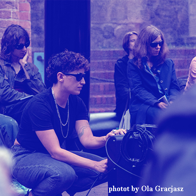

TO KNOW VULTURES SO WELL
90'
by Carolina Mendonça & Catalina Insignares
A story that has as much to do with the dead, as with opening the registers of what is audible a story of training as channellers, a story of conversations that take place in the midst of very loud frequencies, a story about (missed) encounters with the dead in which we sometimes failed to understand one another.
to know the vultures so well proposes to listen to a cacophony of songs and sounds from the dead with whom the members of the audience have a relationship with.
-
Wednesday, 28th of February, 2024
from 16:00h to 19:00h
@ Rue de l'Hectolitre 3, Reactor
-
limited to 15 people
——————————————————————————————————————————————
We met in 2014 and, since then, we have been collaborating and maintaining a very close complicity in different ways of working together.
n 2015, Catalina was the dramaturg of Carolina's piece Falling where horizontal bodies sink into deeper layers of the earth. From 2015 to 2016 the dialogue with Carolina was crucial for the development of the piece us as a useless duet, in which Catalina investigated how dancing with someone else's fragilities generate an encounter. In 2017, we performed an eight-hour nocturnal reading directed at sleeping bodies and titled Useless land. In 2018 we created and performed the piece Pulp - History as a warm wet place, an intuitive archeology that digests the remains of the XVII-XVIII centuries, together with Rodrigo Andreolli, Ida Daniel and Zuzana Zabkova. In 2020 and 2021 we are dedicated to deepening the landscapes with the dead in the research project Ese muerto se lo cargo yo and we established a close conversation with the sirens, seeking to listen to these female monsters whose lethal weapon is their voices.
Credits
Creation and Performance: Carolina Mendonça and Catalina Insignares
Sound collaboration: Edy Giraldo
Fanzine design: Eva Giraldo
——————————————————————————————————————————————
PROGRAM
16:00 > door opens
16:30 > starting time
18:00 > end
19:00 > door closes
SEE YOU SOON!!